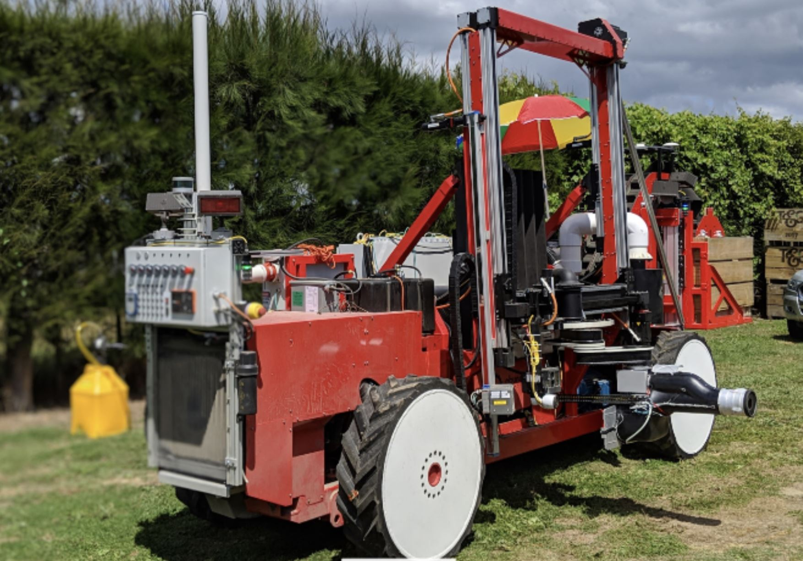
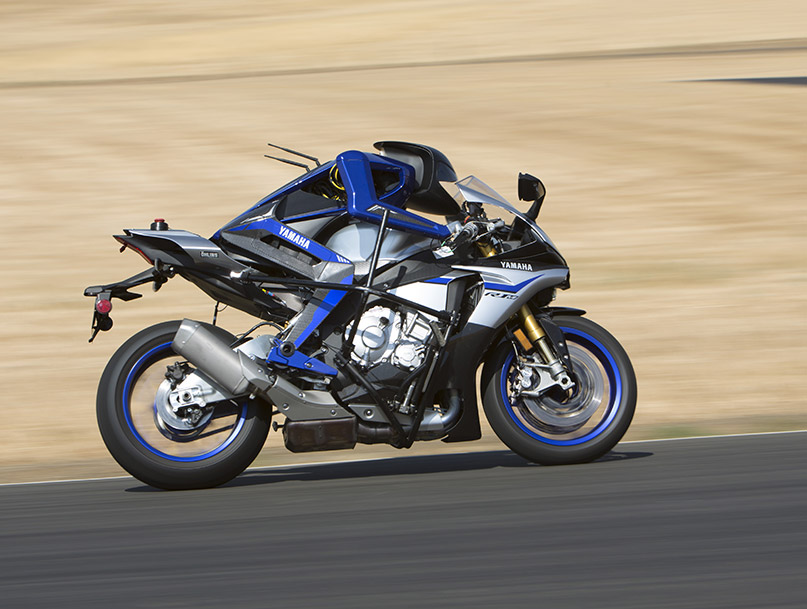
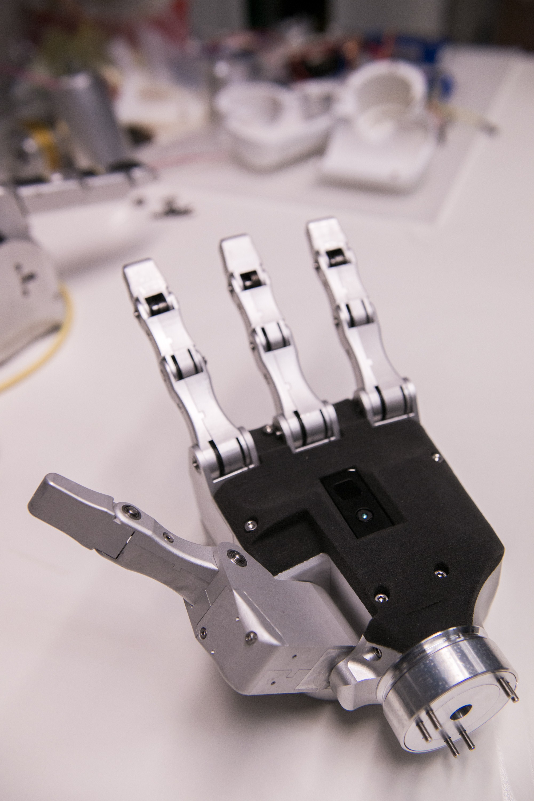
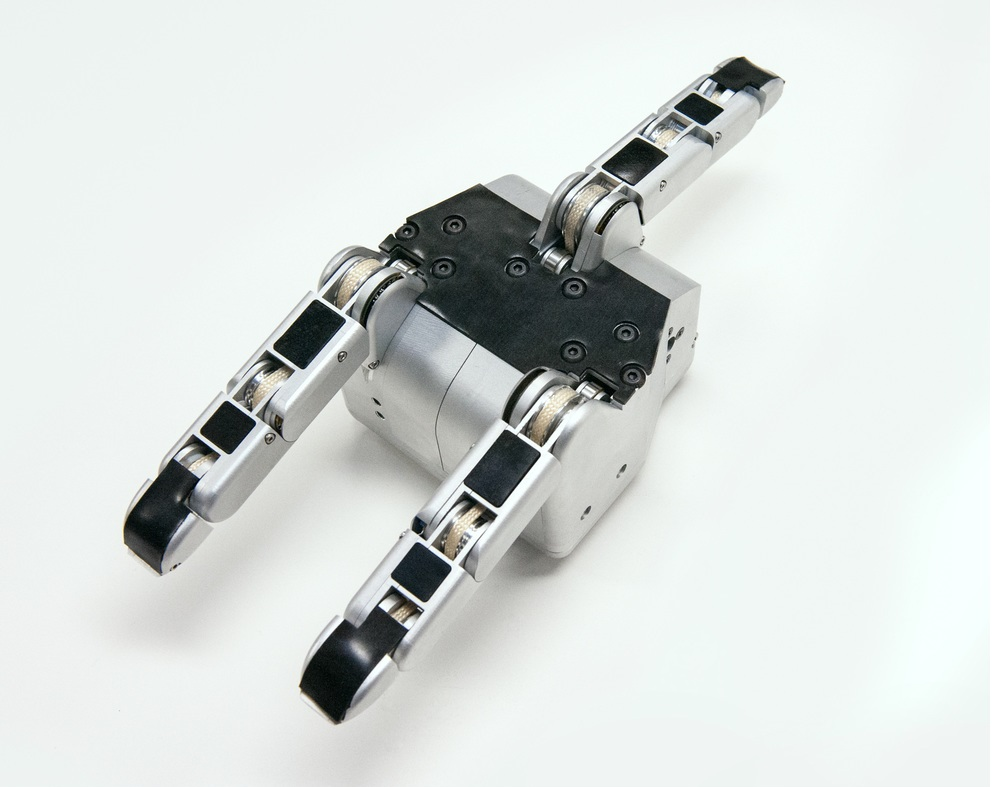

Portfolio Projects
Automated Apple Harvester
Overview
- 8x DOF Mobility Base: All-electric mobility system with independent steering and drive axis for each wheel.
- Dispense mechanism: Sheet metal construction for safely sensing, capturing and conveying fruit with repeated reliability over the course of millions of cycles
- Bin Lift and Spin 2 DOF: Custom slotted fork design to be robust against ground disturbances while supporting 1100 lbs of apple weight. Extrapolated on existing industry designs to modify a COTS bin filler head that mechanically coupled 4 DOF to one actuator in order to reduce cost, complexity and possible failure points.
Abundant Robotics developed an autonmous apple harvesting platform capable of sustained 24 hour operation with a 2 second average pick time and autonomous row-following capabilities. As one of four of the senior mechanical engineers on the close-knit team, Mike was accountable for multiple sub-assemblies of the platform. Responsibilities for each subsystem included: requirements documents, FMEA’s, project management, 3D design modeling, FEA, 2D drawing generation, PDM, procurement, BOM, fabrication, in-field repair, maintenance, reliability testing, failure testing, cross level team coordination and refining designs for low cost solutions.
Motobot
- Custom twisted string actuator built into each forarm with absolute magnetic encoders and force feedback for throttle/brake control on the robot
- Embedded motor controllers for each actuator located in a carbon fiber shell
- Custom cycloidal transmission to 4 bar linkage used for steering control on the system
- Managed junior engineers on design principals, wiring layouts and fabrication techniques. -Yamaha Motobot
Developed the upper torso and arm structure for an autonomous motorcycle riding robot that competed against Valentino Rossie for Yamaha.
Robominer

- Custom pand and tilt torso with worm gear driven mechanism for supporting the upper body during operations or when loss of power
- 5 DOF hands (see below), COTS 2 DOF head with custom helmet and stereo camera layout, for teleoperated situational awaremenss
- Managed electrical technicans to incorporate necessary changes for COTS wheeled base to be integrated with custom electronics. Enaex Robominer
Lead mechanical effort of a mobile humanoid inspection platform for use in open pit mining demolition for Enaex.
Dexterous Robotic Manipulator
Key Features
- Dexterous manipulation of 3 underactuated fingers and 1 thumb to allow for complexed grasping strategies
- Absolute position sensing at each base joint
- Robust force control with load cell sensor on each finger tendon
- Modular finger assemblies and quick disconnect wrist joint
- Included motor controllers and time-of-flight sensor
- Total weight: 1.6 kg
Developed for use in remote mining applications for teleoperatively manipulating fuses and blasting equiment. The time of flight sensor gives the operator a closer visulation of the intended environment by displaying a point cloud of the objects in front of the manipulator. A quick disconnect coupling was built into the wrist to decouple the power and communication from the hand in order to exchange for a more purpose-built tool.
Underactuated Robotic Manipulator


Underactuated robotic Manipulator
Designed for ordinary objects and extreme payloads for robust environments.
SRI InternationalUnderactuated Grasping Methods
Three finger design used to grasp common objects.
SRI International
Detailed View
Tendon driven cables and abseloute encoders give proper positional control over each finger.
SRI InternationalExtreme Loads
Designed to withstand excessive radial loads
SRI InternationalKey Features
- Industry-leading payload of 100kg for extreme applications
- Absolute position sensing at each finger joint
- Robust force control with load cell sensor on each finger tendon
- Modular finger assemblies
- Total weight: 2.1 kg
Initially designed for use by competing teams in the DARPA Robotics Challenge (DRC), the hand provides industry-leading grip force (encompassing) of up to 100 kilograms. The system contains three under-actuated finger in a compact 114 mm x 110 mm x 84 mm and lightweight package at 2 kg. The modular finger actuators consist of flat 5010 360kv brushless DC outrunner motors capable of 105 mNm of output torque and a CSD-14 Harmonic drive transmission at a gear ratio of 100:1. Unlike other robotic grippers that use mechanical linkages for each joint, the underactuated robotic hand employs a custom braided Vectran strap from TwinLine to transfer the tension from the output of the harmonic to the finger joints. This provides a robust amount of force at 33 kg that can be applied with very little friction. Each joint of the underactuated robotic hand includes absolute encoders that provide direct measurement position control, as well as load cell measurement in the tendons for force control. The system is unique in its absolute sensing for joint position: it provides an accurate 3D representation of joint position at all times. The hand is controlled via ROS over Ethernet and is powered by 24 V. The electronics control currents locally at 40 Hz and control around tendon tension at 1 Hz. The result is a gripper with the capacity to be both extremely gentle and extremely strong. For more information check out the post on the SRI.